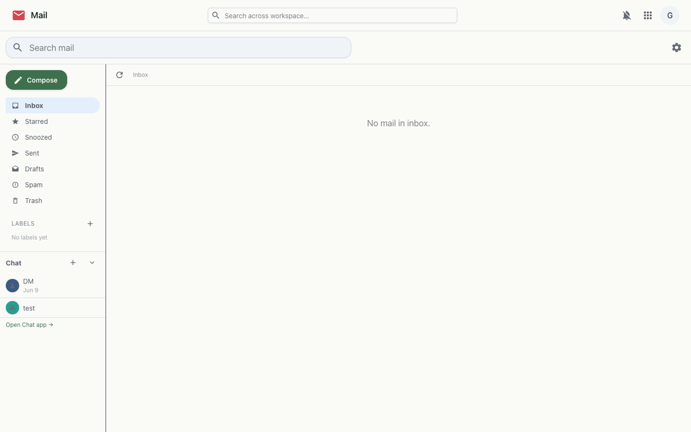
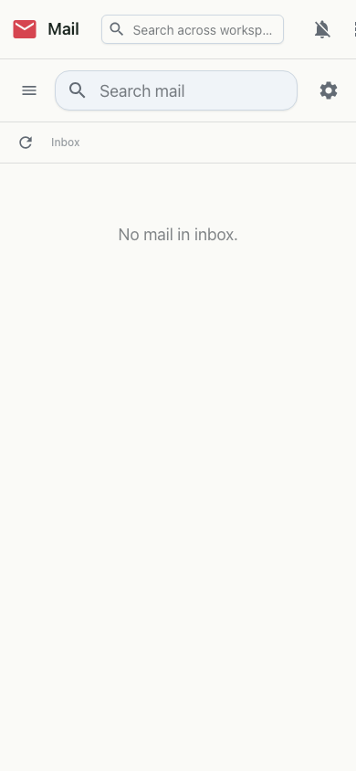

A full self-hosted mailbox — read, write, search and organise your email without handing it to a third party.
Mail is a complete webmail client backed by your own mail server. Your messages live on infrastructure you run — Mail just gives you a fast, modern interface to them, with single sign-on shared across the workspace.


<you>@your-domain.Mail connects to a self-hosted mail backend over IMAP/SMTP; the workspace maps your login to your mailbox. Outbound mail is delivered through the configured relay, and inbound mail lands in your mailbox in real time.